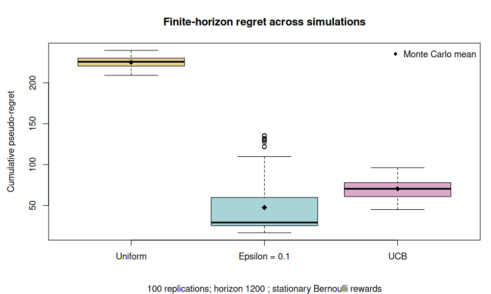

9. Bandits: learning from chosen actions#
Question. How can we choose well while collecting the information needed to learn what is good?
An online learner with full information sees the consequences of all candidate predictions after each round. A bandit learner sees only the reward of the action it chose. This creates an allocation problem: repeatedly choosing an apparently good action can prevent discovery of a better one.
We begin with stationary stochastic bandits. The assumptions make the target clear and allow a small experiment whose behaviour can be inspected without a large model or external service.
9.1 · Define the stochastic model#
There are \(K\) arms. Arm \(i\) supplies iid rewards with a fixed mean \(\mu_i\); for this chapter rewards lie in \([0,1]\). At time \(t\), the policy chooses \(A_t\) from past actions and observed rewards, then observes \(Y_t\) from that arm. No unchosen reward is revealed to the policy.
The independent-arm-stream formulation is convenient. More general conditional-mean assumptions are possible, but must be stated before importing a theorem. Here means do not drift, reward distributions do not depend on previous actions, and a reward is observed immediately.
Let \(\mu_* = \max_i\mu_i\) and \(\Delta_i=\mu_* - \mu_i\). The realized allocation defines cumulative pseudo-regret
where \(N_i(T)\) counts pulls of arm \(i\). Its expectation measures the expected reward lost through choosing suboptimal means. By contrast, \(T\mu_*-\sum_tY_t\) also includes reward noise and can be negative. Distinguish these quantities when plotting a simulation.
9.2 · Why greedy allocation can fail#
A greedy policy samples each arm initially and then repeatedly chooses the largest empirical mean. Early noise can make the best arm look poor. If that arm is never revisited, the error cannot be corrected.
An \(\varepsilon\)-greedy policy selects a random arm with probability \(\varepsilon\) and otherwise acts greedily. A fixed positive \(\varepsilon\) maintains exploration but keeps selecting suboptimal arms at a positive rate, so its asymptotic pseudo-regret is generally linear when gaps are positive. A finite-horizon experiment can still favour a particular tuning: asymptotic orders do not determine every finite-sample ranking.
Bandit learning is therefore connected to experimental design, but its objective includes the rewards obtained during learning. A design chosen only for final estimation precision may spend too much time on actions that are costly in terms of cumulative reward.
9.3 · Upper confidence bounds#
After pulling each arm once, a common UCB rule for bounded rewards is
The empirical mean rewards an arm that looks promising. The bonus rewards uncertainty and decreases with the number of observations. The index can exceed 1: it is a selection score, not a fitted Bernoulli probability.
For a fixed sample size, Hoeffding’s inequality bounds deviations of a bounded sample mean exponentially in its sample size. A bandit proof must additionally handle the adaptively chosen count and repeated opportunities for error. One cannot simply substitute a random count into an arbitrary fixed-sample interval and declare simultaneous or optional-stopping validity.
Under the stationary bounded-reward assumptions, UCB analysis bounds the expected number of pulls of each suboptimal arm by order \(\log T/\Delta_i^2\), plus lower-order terms. Substituting into Equation (9.1) gives gap-dependent regret of order \(\sum_{i:\Delta_i>0}\log T/\Delta_i\). Small gaps make learning harder. This statement is about cumulative decisions, not an automatically valid final confidence interval.
Example 9.1 · The lower empirical mean can be the sensible next choice
Setup. Before round 101, two arms have counts 80 and 20 and empirical means 0.60 and 0.50.
Work it through. Their UCB indices are approximately \(0.60+\sqrt{2\log101/80}=0.940\) and \(0.50+\sqrt{2\log101/20}=1.179\). The second arm is selected.
What this shows. UCB is not claiming the second arm has an estimated success probability above one. It selects the less-explored arm because plausible improvements still matter to future decisions.
9.4 · Cumulative reward and final identification differ#
In best-arm identification, the output is an arm, and the goal may be to make the probability of a wrong recommendation at most \(\delta\) using few observations. In cumulative-regret minimization, every reward during the experiment matters. The two goals are related but are not interchangeable.
Example 9.2 · Account for both exploration and a wrong commitment
Setup. Two arms have means 0.65 and 0.55. Over a horizon of 1,000, an explore-then-commit policy pulls each arm 50 times and then chooses one arm permanently. Suppose, illustratively, that this pilot leads to the wrong choice with probability 0.10.
Work it through. Exploration costs \(50(0.10)=5\) units of expected reward. A wrong commitment costs an additional \(900(0.10)\), occurring with probability 0.10, for an expected cost of 9. Total expected pseudo-regret is 14.
What this shows. The error probability and its consequences both matter. The 0.10 error probability is a hypothetical input here, not a computed guarantee for this sample size. A real analysis must estimate or bound it under its reward model.
Inference after adaptive allocation is another distinct question. Selecting the largest estimated arm and reporting its ordinary fixed-sample interval can combine allocation effects, winner selection, and stopping. Later chapters study how data-dependent selection changes inferential targets. A low-regret theorem alone does not solve that problem.
9.5 · Execute a stationary bandit experiment#
The lab compares uniform exploration, fixed-\(\varepsilon\) greedy allocation, and UCB. Each simulation generates a table of potential rewards to couple the policies, but a policy receives only its chosen entry. The simulator uses the known means solely to calculate pseudo-regret.
Use the same horizon and initial sampling rule for every policy. The output reports mean pseudo-regret, its Monte Carlo standard error, average reward, and the proportion of optimal-arm selections. It also reports a paired difference. Unfavourable finite-horizon results are legitimate; interpret the horizon, reward gaps, and tuning rather than altering the seed.
Code
# Chapter 9: stationary bounded rewards. Base R; no reward stream is shown to a policy.
set.seed(2026102109)
options(width = 100)
means <- c(.25, .40, .55, .65)
K <- length(means)
T <- 1200L
B <- 100L
policies <- c("uniform", "epsilon_0.1", "ucb")
one_run <- function(reward_table, policy) {
counts <- reward_sum <- numeric(K)
regret <- total_reward <- optimal_choices <- 0
for (t in seq_len(nrow(reward_table))) {
if (t <= K) {
a <- t
} else if (policy == "uniform") {
a <- sample.int(K, 1)
} else if (policy == "epsilon_0.1") {
a <- if (runif(1) < .1) sample.int(K, 1) else which.max(reward_sum / counts)
} else {
index <- reward_sum / counts + sqrt(2 * log(t) / counts)
a <- which.max(index)
}
y <- reward_table[t, a] # Only this chosen reward is supplied to the update.
counts[a] <- counts[a] + 1
reward_sum[a] <- reward_sum[a] + y
regret <- regret + max(means) - means[a]
total_reward <- total_reward + y
optimal_choices <- optimal_choices + (a == which.max(means))
}
c(pseudo_regret = regret, reward_rate = total_reward / nrow(reward_table),
optimal_fraction = optimal_choices / nrow(reward_table))
}
ans <- array(NA_real_, dim = c(B, length(policies), 3),
dimnames = list(NULL, policies, c("pseudo_regret", "reward_rate", "optimal_fraction")))
for (b in seq_len(B)) {
# Common potential outcomes couple policies for paired comparisons.
reward_table <- sapply(means, function(p) rbinom(T, 1, p))
for (j in seq_along(policies)) ans[b, j, ] <- one_run(reward_table, policies[j])
}
out <- cbind(mean_regret = colMeans(ans[, , 1]),
regret_mcse = apply(ans[, , 1], 2, sd) / sqrt(B),
mean_reward = colMeans(ans[, , 2]),
optimal_fraction = colMeans(ans[, , 3]))
cat("Stationary Bernoulli bandits; fixed horizon, all arms sampled once first:\n")
print(round(out, 4))
paired <- ans[, "ucb", "pseudo_regret"] - ans[, "epsilon_0.1", "pseudo_regret"]
cat("\nPaired UCB minus epsilon-greedy pseudo-regret (negative favours UCB):\n")
print(round(c(mean_difference = mean(paired), mcse = sd(paired) / sqrt(B)), 4))
cat("Finite-horizon rankings can depend on gaps, tuning and horizon.\n")
cat("The simulator knows means for scoring; the policies do not.\n")
figure_dir <- Sys.getenv("COURSE_FIGURE_DIR", "")
if (nzchar(figure_dir)) {
dir.create(figure_dir, recursive = TRUE, showWarnings = FALSE)
png(file.path(figure_dir, "09-bandits.png"), width = 1000, height = 600, res = 110)
par(mar = c(5, 4.5, 4, 1))
boxplot(as.data.frame(ans[, , "pseudo_regret"]),
names = c("Uniform", "Epsilon = 0.1", "UCB"),
col = c("#E9D28B", "#A6D4D7", "#DBAACB"),
ylab = "Cumulative pseudo-regret", main = "Finite-horizon regret across simulations",
sub = paste(B, "replications; horizon", T, "; stationary Bernoulli rewards"))
points(seq_along(policies), out[, "mean_regret"], pch = 18, cex = 1.3)
legend("topright", legend = "Monte Carlo mean", pch = 18, bty = "n")
invisible(dev.off())
}
Output
Stationary Bernoulli bandits; fixed horizon, all arms sampled once first:
mean_regret regret_mcse mean_reward optimal_fraction
uniform 225.1350 0.6526 0.4613 0.2503
epsilon_0.1 47.6945 3.5296 0.6103 0.7338
ucb 70.3205 1.1183 0.5908 0.6587
Paired UCB minus epsilon-greedy pseudo-regret (negative favours UCB):
mean_difference mcse
22.6260 3.7281
Finite-horizon rankings can depend on gaps, tuning and horizon.
The simulator knows means for scoring; the policies do not.


9.6 · Exercises#
Derive \(E\bar R_T=\sum_i\Delta_iE N_i(T)\). Explain why reward noise is absent from the pseudo-regret conditional on the chosen arms.
Keep the total horizon fixed and move the two largest means closer together. Record regret and optimal-arm selection. Explain why these two metrics can change in different directions.
Replace fixed \(\varepsilon=0.1\) with another declared exploration schedule. Compare it without tuning on the same replications used for the final report.
Change all means halfway through. Identify exactly which stationary assumptions fail and specify a more suitable comparator for evaluating tracking.
Worked solutions
1. Group the terms \(\Delta_{A_t}\) by arm. Linearity of expectation yields the displayed identity without requiring that counts be independent of rewards. Pseudo-regret records mean opportunity cost; the action path remains random, but additional reward noise is excluded.
2. Smaller gaps make the identity of the best arm harder to learn, yet a wrong selection costs less. An algorithm can select the optimal arm less often while incurring less pseudo-regret. Report both quantities and the changed population means.
3. Use development simulations to select a schedule and independent simulation seeds or scenarios for its final assessment. Otherwise the best-looking tuning is selected on evaluation noise. A schedule’s empirical success is not a proof of its regret rate.
4. The arm distributions and means are no longer fixed. A comparator that may switch at known segment boundaries is different from the best single arm over the whole horizon. A general tracking claim requires a restriction on change, an appropriate policy, and analysis for that setting.
Reading and transition#
Read Chapters 4, 6, and 7 of Lattimore and Szepesvári, Bandit Algorithms. They define the stochastic protocol and develop explore-then-commit and UCB analyses. Next, replace numerical rewards with pairwise preference feedback.